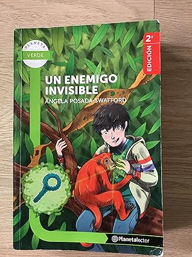

Un enemigo invisible
Reseña por Jorge I. Zuluaga

Ver reseña en GoodReads (necesita cuenta)
Se supone que es literatura para niños y jóvenes, pero puedo asegurarles que está tan bien escrita, es tan entretenida e informativa y no le faltan reflexiones profundas como las que encontrarán en otros relatos o novelas cortas para "adultos". No se dejen engañar por una portada bellamente ilustrada o por la advertencia "desde 12 años" de la primera página.
El tema no podría ser más actual: ¿qué pasaría si el día de mañana uno de los cientos de virus potencialmente mortales que pasan sus días "dormidos" en las selvas tropicales del mundo saliera de allí para contagiar a humanos en los centros urbanos más poblados del planeta? (Y no sigo, porque lo demás serían spoilers).
Naturalmente, esta historia fue escrita unos años antes de que reventara la pandemia producida por el coronavirus 2 (el libro se imprimió en 2013, poco menos de 7 años antes del fatídico 2020) e imagino que su autora, Ángela Posada-Swafford, se habrá sorprendido por lo premonitorio de algunas de sus predicciones. Aunque, como siempre, la realidad tiene el potencial de superar con creces a la ficción. Y es que el Canzanboria, el virus descrito en la historia y salido de la genial mente creativa de Ángela y sus amigos, ciertamente es bien diferente al muy real SARS-CoV-2. Más aún, las consecuencias económicas y sociales de la epidemia que sucede en este libro (hasta donde se describen) todavía no se comparan con las que ha tenido el catastrófico "bicho" del 2020.
Otra vez (lean mi reseña de 90 grados de latitud sur aquí https://www.goodreads.com/review/show...), Ángela la saca del estadio al construir una historia divertida, basada en hechos muy reales (no hay duda de que la tía Abi de la historia es ella misma y las experiencias le han ocurrido, si no de la misma manera, sí de formas muy parecidas), pero, sobre todo, increíblemente inclusiva. ¡Eso me encanta!
Este es un libro de ciencia y de científicos donde niñas, mujeres jóvenes y adultas, ancianas (una de una tribu amazónica) y personas de muchas nacionalidades y "colores" (una forma fea de decir orígenes étnicos) juegan un papel igualmente protagónico. No sé si Ángela hace el cálculo riguroso cada que escribe, pero dudaría que haya historias más equilibradas en términos de inclusión que estas novelas suyas. Realmente no creo que haya ningún cálculo; Ángela tiene un talento natural para la inclusión ¡y de eso hace mucha falta!
Y no es para menos. Estas son obras dirigidas a niños y jóvenes, de todos los sexos, géneros y orígenes sociales y étnicos, y es importante que, a diferencia de la mayor parte de la literatura infantil y juvenil escrita en la historia, el protagonismo no esté restringido a hombres blancos europeos, mientras que las mujeres juegan un papel de delicadas cuidadoras, amorosas hijas y esposas, o las personas de etnias diferentes son simplemente los subalternos cómplices y trabajadores de unos aguerridos hombres europeos con barba.
Hasta para los personajes de los "malos" Ángela es inclusiva.
(Ahora sí, ¡spoiler alert!)
No, en "Un enemigo invisible" descubrirán que los científicos que salvan a un país entero y al mundo son una mujer y un afroamericano; que uno de los investigadores es un joven, también afroamericano, con una particular forma de ser y de vestir (muy peculiar de los afroamericanos de los EE. UU.); que los cabecillas de una banda son elegantes (¡y terribles!) africanos sobre los que no manda un europeo barbudo; y, lo más hermoso, que una comunidad indígena en el Amazonas (normalmente con rigurosas jerarquías patriarcales) le otorga a una "anciana" el máximo grado dentro de la comunidad en reconocimiento a su trabajo y sabiduría para protegerla (no porque sea madre ni cuidadora).
Si tienen niños y jóvenes con alguna inclinación científica (¡o sin ella!), regálenles los libros de Ángela. Guardadas las proporciones (yo sé que Ángela nunca haría una comparación así), para mí estas novelas juveniles son el equivalente moderno a las novelas y relatos de Julio Verne o a las historias ilustradas de Tintín (que sé que ella tanto admira).
Inspirarán, sin lugar a dudas, a una nueva generación de científicos de todos los géneros y orígenes sociales y étnicos.
¡Bravo, Ángela!